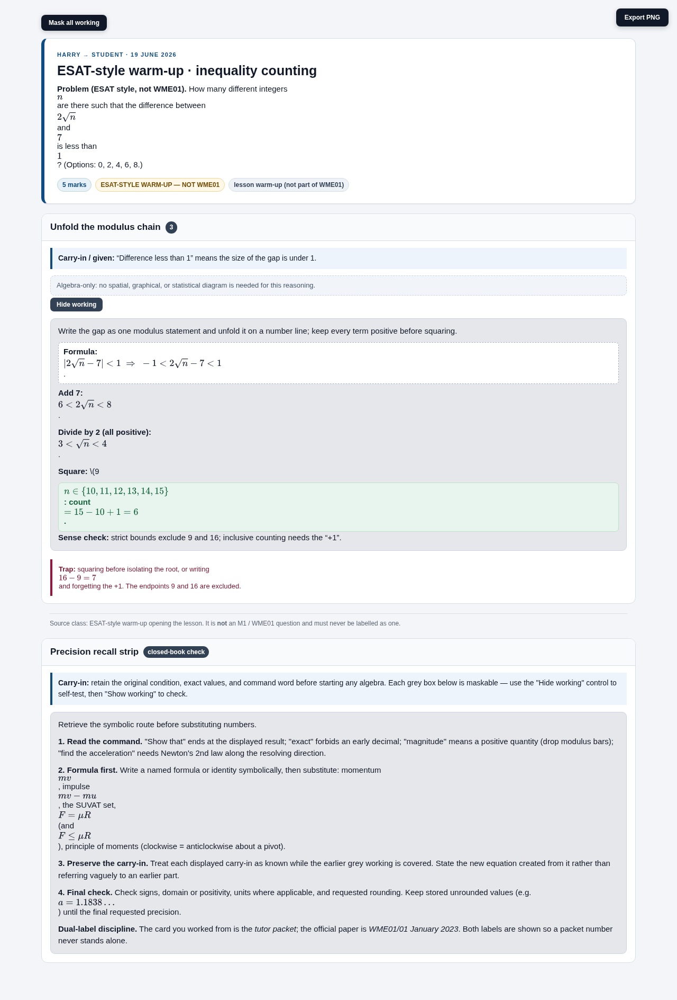
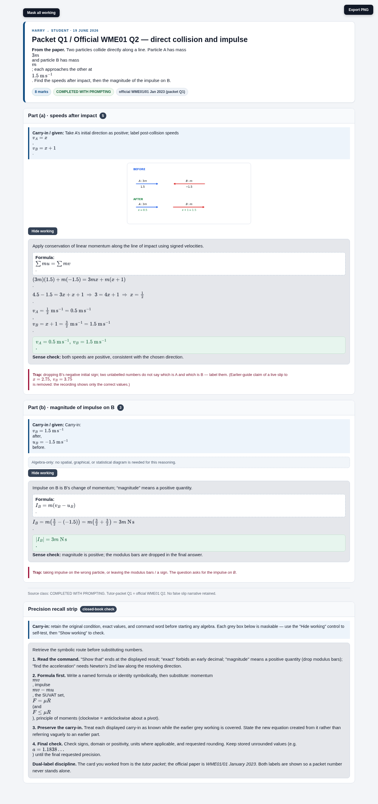
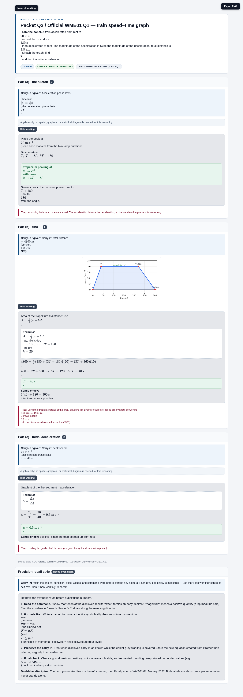
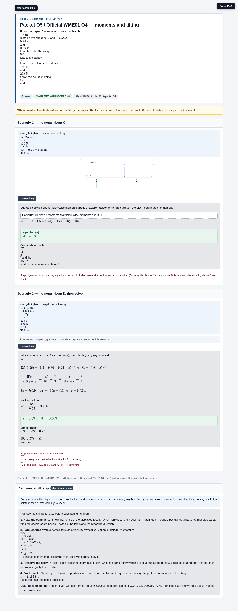
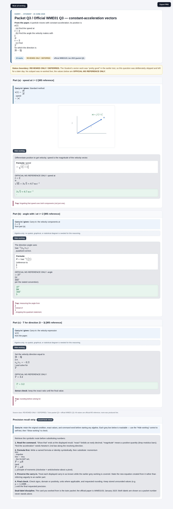
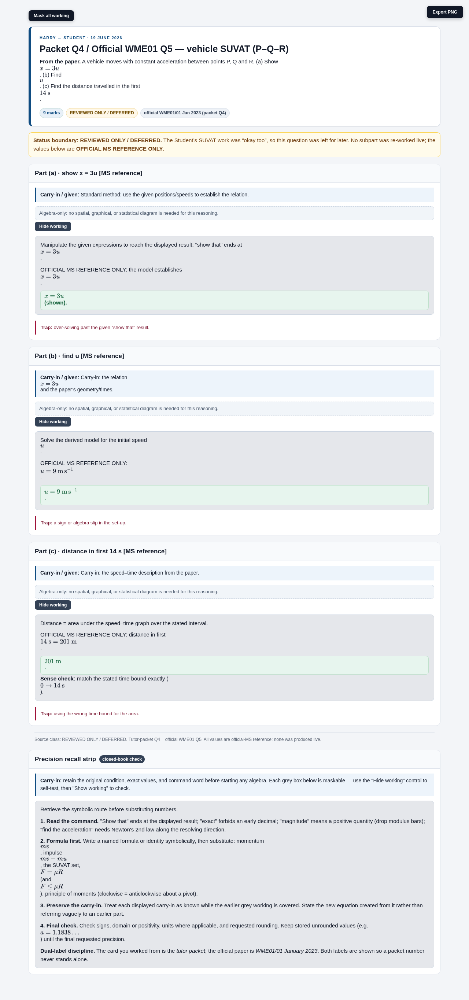
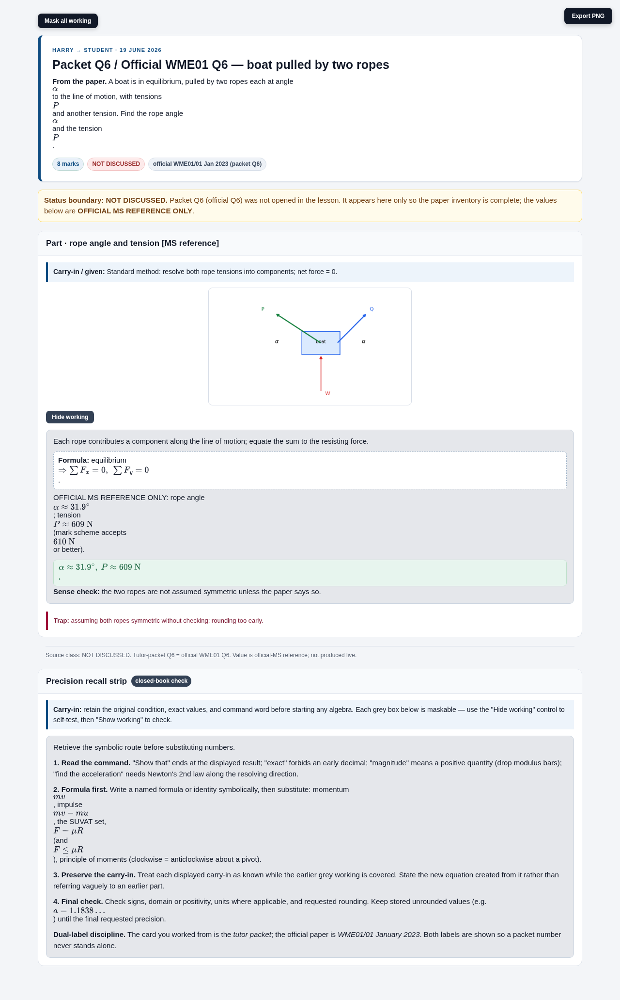
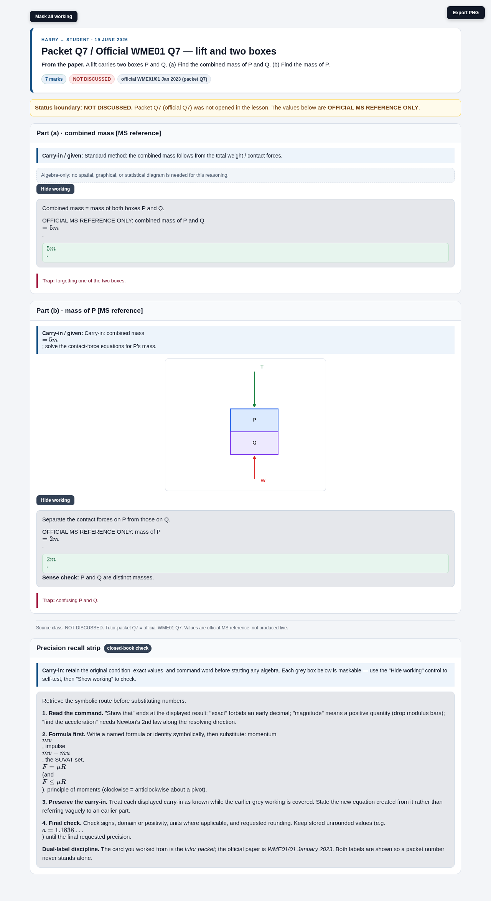
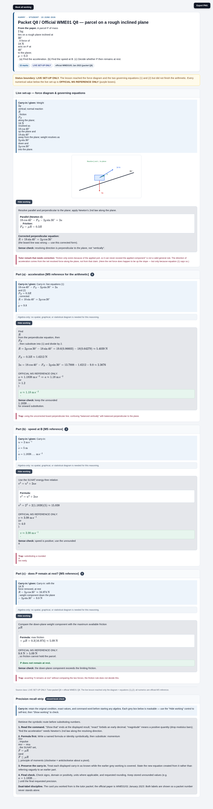

Harry → Student · 19 June 2026
Mechanics M1 (WME01/01 Jan 2023)
multi-step deck
Nine source-bounded, maskable working cards rebuilt to the current multi-step format. Each opens a per-question standalone page with the dual label (tutor packet ↔ official WME01), exact marks/parts, a grey maskable “finalized work” box with a real reveal/hide control, and a literal PNG export. The official QP/MS controls wording, marks and values; lesson status is shown on every card.
Coverage: 1 ESAT warm-up (not WME01) + 8 WME01 questions. Guide provenance SHA-256
0edeb6db0a327900b6579a8c1b49b29a1d78f9fd83d6f399ce260ab17fd296a4. Publication status: local only — not published, uploaded, or indexed.
ESAT-STYLE WARM-UP — NOT WME01
ESAT warm-up
Inequality counting

COMPLETED WITH PROMPTING
Packet Q1 / WME01 Q2
Collision & impulse

COMPLETED WITH PROMPTING
Packet Q2 / WME01 Q1
Train speed–time graph

COMPLETED WITH PROMPTING
Packet Q5 / WME01 Q4
Moments & tilting

REVIEWED ONLY / DEFERRED
Packet Q3 / WME01 Q3
Vectors

REVIEWED ONLY / DEFERRED
Packet Q4 / WME01 Q5
Vehicle SUVAT

NOT DISCUSSED
Packet Q6 / WME01 Q6
Boat, two ropes

NOT DISCUSSED
Packet Q7 / WME01 Q7
Lift & two boxes

LIVE SET-UP ONLY
Packet Q8 / WME01 Q8
Rough inclined plane